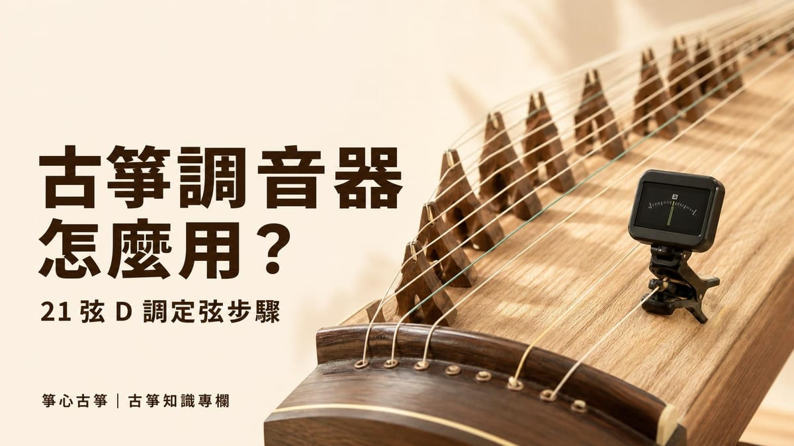

保養調音
秋冬古箏怎麼保養？乾燥季節的琴弦、面板與琴碼照顧重點
秋冬東北季風轉乾、暖氣與除濕機也開始運轉,古箏存放環境的濕度常常偏低,面板容易出現裂紋,琴弦走音變快,琴碼也可能悄悄移位⋯

古箏調音器的用途很單純：聽出你彈的這條弦音高是太高還是太低，並顯示要往哪個方向調整。不管是夾式電子調音器還是手機 App，操作邏輯都一樣——彈一下空弦，看畫面顯示的音名與指標，再轉動琴軫（調弦鈎或扳手）讓音準對齊目標音，彈一下確認，對了再換下一條弦。
古箏之所以幾乎每次練習前都要調一次，是因為 21 條弦長時間繃著張力，溫度、濕度變化或彈奏力道都會讓音高慢慢跑掉；不調音直接彈，五聲音階的旋律聽起來就會「怪怪的」，連簡單的曲子都會走音。
要用調音器對音，得先知道每條弦該對到哪個音。根據維基百科〈古箏〉條目，21 弦古箏通常依 D 大調五聲音階定弦；弦的排列是由內側（靠近彈奏者，音較高）到外側（音較低），第 1 弦在最內側、音最高，第 21 弦在最外側、音最低。
| 簡譜唱名 | 音名 | 說明 |
|---|---|---|
| 1（Do） | D | 主音，整個五聲音階以它為基準 |
| 2（Re） | E | — |
| 3（Mi） | F♯ | — |
| 5（Sol） | A | — |
| 6（La） | B | 每過 5 條弦，音高會整整高（或低）一個八度，再重複同一組音 |
古箏是五聲音階，沒有 Fa（4）和 Ti（7），所以古箏調音器或 App 若有「五聲音階」或「中國傳統調式」選項，通常就只會列出這五個音，比西方十二音調音器簡單好對。想更完整了解古箏的構造與定弦原理，可以參考本站〈古箏是什麼：歷史、構造、調弦與流派〉。
目前常見的「古箏調音器」大致分三種：
| 類型 | 原理 | 適合情境 |
|---|---|---|
| 夾式電子調音器 | 夾在琴身或琴絃上感應震動，不易受環境噪音干擾 | 家中環境較吵，或習慣實體按鍵操作 |
| 手機 App | 用手機麥克風收音，畫面通常會列出 21 條弦對應的音名與目前音準 | 臨時沒帶調音器、想一次看到整排弦的狀態 |
| 定音音源或鋼琴對照 | 播放固定音高讓耳朵比對，不會顯示具體數據 | 想順便練耳朵辨音，或作為調音器的輔助確認 |
不論用哪一種，原理都相同：先讓機器或耳朵聽到你彈的那條弦，再依照顯示結果調整。用手機 App 時，環境愈安靜、手機愈靠近琴身，辨識通常會愈準確。
古箏的弦容易受溫度、濕度影響而走音，保養與調音其實是同一件事的兩面，可以參考〈古箏保養與調音〉與〈秋冬乾燥季節的古箏保養：琴弦、面板與琴碼〉，了解不同季節該注意的細節。
剛開始自己調音，最常卡關的幾個情況：
| 情況 | 可能原因與做法 |
|---|---|
| App 收不到音、畫面跳來跳去 | 環境太吵，或手機離琴太遠；換到安靜角落，或改用夾式調音器直接感應震動 |
| 轉了半天音還是對不準 | 可能同時碰到鄰弦，或轉錯方向；先確認只彈單一條弦，方向弄反時可以先退回一點再慢慢調 |
| 昨天調好的弦今天又跑音 | 多半是溫度、濕度變化造成的正常現象，練習前重新調一次即可，不代表弦或琴壞了 |
如果怎麼調都覺得不對，或擔心轉過頭把弦弄斷，先不要硬轉，留著讓老師在上課時一起確認會更保險。
古箏調音器怎麼用，說穿了就是「彈一下、看畫面、照方向轉一點」，反覆操作 21 次。一開始可能覺得瑣碎，但調音本身也是練習聽音準的過程，熟悉之後通常幾分鐘就能完成。如果你還沒試過自己調音，或想請老師示範一次完整流程，新莊箏心古箏音樂教室提供 $350 體驗課，由老師一對一帶你實際操作調音器、認識 21 條弦的定弦方式，再開始第一堂彈奏練習。
沒有固定答案，原則上建議每次練習或上課前都重新檢查一次；溫度、濕度變化幾乎每天都會影響弦的張力，季節交替時更明顯。
大多數調音器會顯示你彈的音比目標音高還是低：偏向某一邊或出現負號，通常代表音偏低要調緊；偏向另一邊或出現正號，則代表偏高要放鬆，具體顯示方式依機型或 App 而不同，建議先確認自己使用的調音器怎麼標示。
可以用鋼琴或已經調好音的古箏當參考，靠耳朵比對，但對新手來說誤差較大，還是建議準備夾式調音器或手機 App，調出來的音會更準確、也更有效率。
正常範圍內微調通常不會，但如果一次轉太多、方向轉錯讓弦繃得過緊，確實有斷弦風險；放慢速度、每轉一點就彈一下確認，是比較安全的做法。
新莊箏心古箏音樂教室提供 $350 體驗課，由老師一對一帶你認識古箏、彈出第一段旋律。
本教室位於新北市新莊區（鄰近新莊體育場、新泰國中），採預約制，為確保上課品質平日不開放參觀；預約成功後將提供詳細交通資訊。